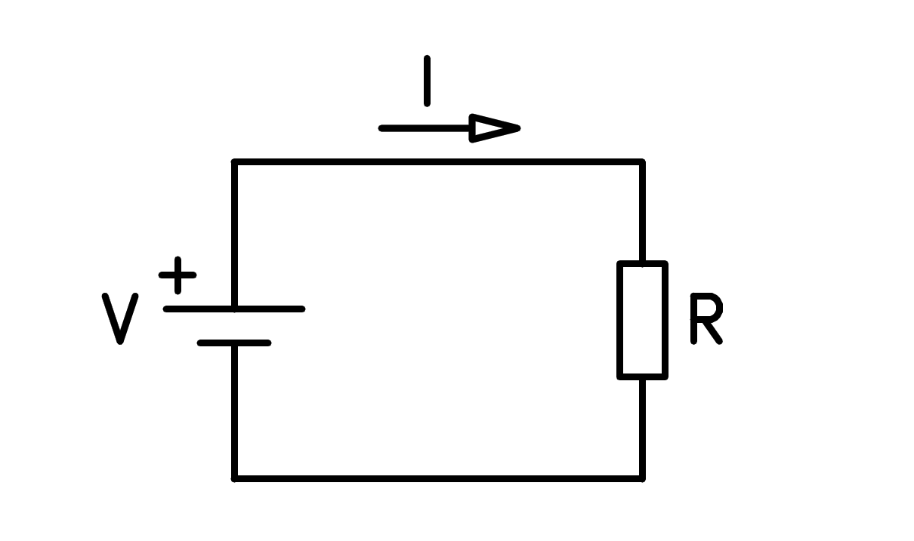

LA LEY DE OHM
La corriente y el voltaje, asociados con una resistencia, se relaciona entre sí, mediante una fórmula muy
útil y sencilla llamada LEY DE OHM. Esta ley, que examinaeros
en detalle más adelante, es una de las formulas más utilizadas en la electricidad y electrónica por parte de
ingenieros, técnicos y estudiantes, para el análisis y diseño de todo tipo
de circuitos, incluyendo amplificadores, fuentes de alimentación, etc, así como para la selección apropiada
de conductores, fusibles, interruptores, tomacorrientes y otros tipos de
componentes.
Antes de conocer la LEY DE OHM es conveniente recordar qué es, cómo está estrucuturado y
cómo funciona un circuito electrico simple.

Según vimos en una lección anterior, un circuito eléctrico, es un sentido general, en un sentido general es
una combinación de componentes conectados de tal forma que
proporcionen una trayectoria cerrada para la circulación de la corriente y permitan aprovechar la energía de
los electrones en movimiento para producir otras formas de energía,
por ejemplo luz, calor, sonido, movimiento, etc. Un circuito electrico simple como el anterior se compone,
básicamente, de los siguientes elementos.
- Una fuente de energía eléctrica (V), la cual suministra la fuerza necesaria para impulsar una corriente
de electrones a través del circuito. Esta fuerza se expresa en voltios
(V). La corriente producida se expresa en AMPERIOS (A).
- Un conjunto de conductores, los cuales proporcionan un camino de poca resistencia para la circulación de
la corriente a través del circuito.
- Una Carga, la cual convierte la energía de los electrones en movimientos en otras
formas de energía. En este caso, la carga está representada por una
resistenciaresistencia (R), la cual convierte la energía electrica en calor. La
resistencia se expresa en ohmnios (Ω). En el resto de este capitulo asumiremos que la carga
o cargas de un circuito son resistencias puras.
- Un INTERRUPTOR (S), el cual actúa como elemento del control del circuito, regulando el
paso de corriente hacia la carga.
Examinemos como funciona este circuito eléctrico simple. Supongamos incialmente que el interruptor (S) está
en la posición abierta (OFF). Bajo esta condición no circula la corriente
a través de los conductores ni de la carga que proyecta porque la trayectoria es interrumpida, se dice,
entonces, que el circuito está Abierto.
Supongamos ahora que se acciona el interruptor y se pasa a la posición cerrada (O N.)
Bajo esta condición , los electrones tendrán una trayectoria ppr donde circular y la fuente podrá impulsar
una corriente eléctrica (I). Se dice, entonces, que el circuito está cerrado.
Considerando el sentido convencional, la corriente sale de la fuente del borne positivo (+), se desplaza a
lo largo del conductor superior, atraviesa la carga (R), continúa por el conducto superior,
atraviesa la carga (R), continúa por el conductor superior y regresa a la fuente y al borne negativo. El
proceso se repite indefinidamente mientras permanezca cerrado el interruptor.
Hecho este rencuento, estamos ya en capacidad de conocer y asimilar la ley de Ohm
ENUNCIADO DE LA LEY DE OHM
En un circuito resistivo, o sea que solo tiene resistencias, el voltaje (V), la resistencia (R), y la
corriente (I) están relacionados entre si mediante una fórmula muy útil
y sencilla llamada LA LEY DE OHM, descubierta por el físico alemnán Georg Simón Ohm
(1789-1854) y dada a conocer públicamente en 1828. Esta ley
establece lo siguiente:
"La intensidad (I) de la corriente eléctrica que circula por un circuito es directamente proporcional al
voltaje aplicado (V) e inversamente proporcional a la resistencia (R)
del mismo"
Matemáticamente, esta relación se puede representar en forma resumida mediante la siguiente formula:
El significado de cada uno de los términos en esta ecuación son diferentes
- V - Es la tensión aplicada en voltios (V)
- I - Es la corriente que circula por el circuito expresada por Amperios (A)
- R - Es la resistencia u oposición de la corriente, expresada en ohmnios (Ω)
Para que la aplicación de esta fórmula produzca los resultados correctos, las cantidades deben expresarse en las
unidades
básicas o patrón , es decir, el voltaje en Voltios,la corriente en Amperios, y
la resistencia en Ohmnios.
Si estas magnitudesestán expresadas en múltiplos o submúltiplos de las unidades básicas las mismas deben
convertirse primero a estas unidades antes de aplicar la ley de ohm,
Por ejemplo 20mV (milivoltios) deben expresarse como 0,020V, 10kΩ (kilohmnios) como 10,000 Ωy 30 MicroA
(Microamperios) como 0.000030A.
Por tanto, la ley de ohm nos permite calcular una magnitud, digamos la corriente (I), conociendo las otras dos
(V,R). También nos confirma que la intensidad o cantidad de corriente
de un circuito depende del voltaje aplicado por la fuente y de la resistencia que le presenta la carga.